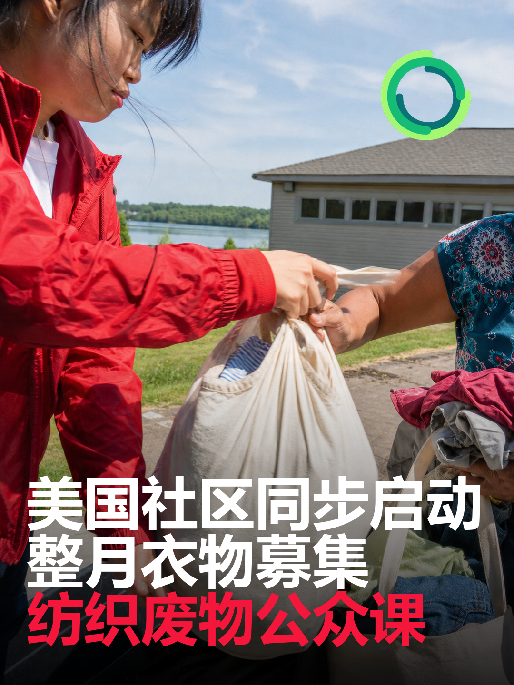
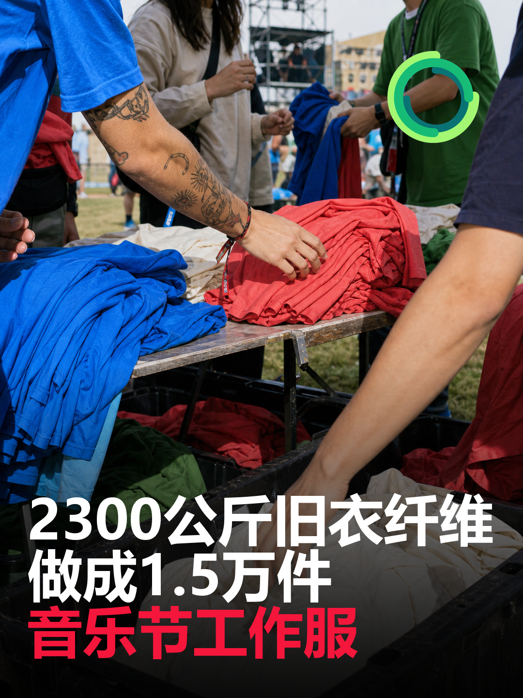

最近24—72小时内，旧衣循环的新增信号集中在“让回收结果被看见”。BESTSELLER与丹麦分拣企业NewRetex把2300公斤消费后纺织纤维用于1.5万件音乐节工作服，并披露了30%的纺织品到纺织品再生成分；美国Lake Hopatcong Foundation则把持续一个月的衣物募集与纺织废物公众课程放在同一时间窗口。对铛铛一下而言，下一阶段不只要证明“收到了多少衣服”，还要把其中多少进入再穿着、多少进入纤维再生、最终做成了什么产品公开出来。
总结今日结论

美国新泽西州Lake Hopatcong同时启动月度衣物募集与纺织废物公众课
Lake Hopatcong同时启动月度衣物募集与纺织废物公众课
- 发生日期： 衣物募集于2026年8月3日至31日进行；公众课程于8月6日举行
- 国家/地区： 美国新泽西州
- 事实摘要： Lake Hopatcong Foundation的官方日历显示，“Community Clothing Drive”从8月3日上午9时持续至8月31日下午4时；同一机构将于8月6日晚举办一小时的“Rethinking Textile Waste”社区项目。公开日历确认了活动时间与主办方，但未在可核验页面中披露接收品类、合作处理商、募集目标或回收后的具体去向。
- 产业链环节： 上游社区投放与公众教育；后续分拣和去向尚待披露。
- 影响判断： 中等重要性、社区运营信号。 它不是大型产业项目，也没有公开吨数，但把一个月的持续募集与专门的纺织废物教育放在同一项目周期，有利于把一次性捐衣转化为持续参与。
- 与铛铛一下的关联： 可测试“主题回收月＋一场线上公开课＋月底去向报告”的组合。活动页应提前写清接收范围、预约方式、合作处理商和结果披露日期，弥补该案例目前公开信息的不足。
- 原始来源： Lake Hopatcong Foundation社区日历
日韩日本、韩国暂无重要新增
日本、韩国在旧衣回收政策、品牌回收、二手流通、分拣技术和大型再生项目方面暂无重要新增。不把此前发布的日本自治体衣类回收指南讨论与韩国废衣AI分拣研发计划重复计入今日新闻。
技术技术、材料与循环创新
Smukfest工作服公开了30%的纺织品到纺织品再生成分，其中棉和聚酯分别占18%和12%。这类成分拆分比笼统的“含再生材料”更有参考价值；同时也要注意，项目采用的是机械再生与混配路线，尚未证明100%消费后旧衣纤维能够满足同类工作服的质量和规模要求。Techtextil North America则值得继续跟踪展会后出现的具体设备数据与合作项目。
舆情舆情、消费者与公益
Lake Hopatcong案例说明，社区回收项目可以把“在哪里交衣服”与“为什么要减少纺织废物”放进同一个周期。但现有公开日历没有说明接收标准和最终去向；如果传播先于规则公开，仍可能带来误投和对捐赠去向的疑问。对公众项目而言，教育内容、操作规则和结果披露缺一不可。
来源来源清单
- BESTSELLER｜This year’s Smukfest crew-tee contains 30% textile-to-textile recycled fibres：https://bestseller.com/news/this-year-s-smukfest-crew-tee-contains-30-textile-to-textile-recycled-fibres
- Lake Hopatcong Foundation｜Community Calendar：https://www.lakehopatcongfoundation.org/events/calendars/lhf-events/
- The Nonwovens Institute｜Techtextil North America 2026：https://thenonwovensinstitute.com/event/techtextil-north-america-2026-raleigh-nc/
速览今日最值得关注的四条变化
- 【高】BESTSELLER用2300公斤消费后旧衣纤维制作1.5万件音乐节工作服。 工作服含30%纺织品到纺织品再生纤维，旧衣在丹麦本地回收、分拣并机械再生。
- 【中—高】美国社区同时启动整月衣物募集与纺织废物公众课。 Lake Hopatcong Foundation的衣物募集从8月3日持续至31日，并于8月6日安排“重新思考纺织废物”社区课程。
- 【中—跟踪】Techtextil North America于8月4日开幕。 官方议程覆盖研发、原料、生产、转换、后处理与回收，但展会开幕本身不能被写成新技术已经产业化。
- 【观察】中国、日韩及资本价格端暂无重要新增。 本检索窗口内未发现由权威来源确认、且达到日报门槛的新政策、大型项目、融资、价格或贸易变化。
美国北卡罗来纳州罗利Techtextil North America开幕，回收被纳入技术纺织全链条议程
- 发生日期： 2026年8月4日至6日
- 国家/地区： 美国北卡罗来纳州罗利
- 事实摘要： 北卡罗来纳州立大学The Nonwovens Institute确认，Techtextil North America于8月4日至6日在罗利会议中心举行。活动覆盖研发、原材料、生产工艺、转换、进一步处理和回收；该研究机构在706号展位展示工作，并安排学生研究海报项目。
- 产业链环节： 技术研发、原料、生产、后处理、回收与人才培养。
- 影响判断： 中等重要性、展会跟踪信号。 官方页面证明回收已进入展会全链条议程，但没有列出本届已经发布的纺织回收设备、量产项目或订单。应把它视为发现技术与合作伙伴的入口，而不是产业化成果。
- 与铛铛一下的关联： 可按“识别分拣、拆解、再生、检测、数字化”五类建立展商跟踪表，只记录有明确性能数据、适用物料、处理量和商业案例的方案，避免把展会宣传直接写成技术突破。
- 原始来源： The Nonwovens Institute活动页
政策政策法规与标准
本检索窗口内，中国、美国、欧洲与日韩暂无经官方确认、且直接改变旧衣回收经营规则的重要新增法规或标准。Techtextil North America是行业展会，Lake Hopatcong项目是社区活动，BESTSELLER项目是企业供应链实践，三者均不属于政府强制性政策。
资本资本、并购与项目建设
本检索窗口内暂无经官方确认的重要融资、并购或大型新增产能。BESTSELLER与NewRetex公告未披露投资金额或新增产线，不能据此推断为资本项目。
建议对铛铛一下的影响与可执行建议
- 试做一批可见的闭环产品。 优先选择企业工服、活动志愿者服或公益周边，用一批可控旧衣原料完成分拣、再生与制衣验证。
- 建立投入—产出四项公开数据。 每个闭环项目至少公布旧衣投入重量、可用纤维重量、再生成分比例和最终成品数量，并注明损耗及其他去向。
- 把回收活动做成一个月的内容周期。 用“规则发布—公众课程—中期提醒—结果报告”替代单日投放，观察预约、到场、有效投放和复参与率。
- 只跟踪展会里的硬信息。 对Techtextil等展会，建立设备性能、适用材质、处理量、能耗、客户案例和商业状态字段；没有数据的展商只列为线索，不写成创新成果。
中国暂无重要新增
本检索窗口内，中国在旧衣投放、分拣、再生材料、品牌回收、项目建设和交易渠道方面暂无重要新增。不重复使用前几日已收录的混合聚酯解聚与近红外分拣研究。

丹麦／欧洲BESTSELLER用2300公斤消费后旧衣纤维制作1.5万件音乐节工作服
BESTSELLER用2300公斤消费后旧衣纤维制作1.5万件音乐节工作服
- 发生日期： 2026年8月2日至9日Smukfest活动期
- 国家/地区： 丹麦／欧洲
- 事实摘要： BESTSELLER旗下ONLY BRAND HOUSE与丹麦纺织分拣企业NewRetex合作，为Smukfest制作1.5万件工作人员T恤。官方披露，每件T恤含30%纺织品到纺织品再生材料，其中12%为纺织品到纺织品再生聚酯、18%为纺织品到纺织品再生棉；其余为60%有机棉和10%来自PET瓶的再生聚酯。项目共使用2300公斤消费后纺织纤维，旧衣来自丹麦本地回收中心，经NewRetex分拣、机械再生为纤维、纺纱并重新制衣，官方称流程具备全程可追溯性。
- 产业链环节： 本地旧衣回收、自动／机械分拣、机械纤维再生、纺纱、成衣制造与活动场景应用。
- 影响判断： 高重要性、可见规模应用。 1.5万件和2300公斤说明消费后旧衣纤维已经进入真实批量产品，但30%的纺织品到纺织品比例也说明它仍需与原生／其他再生原料混配。该项目是活动工作服应用，不等于BESTSELLER常规商品线已全面采用同一配方。
- 与铛铛一下的关联： 可把大型活动、企业工服和志愿者服装作为旧衣再生产品的首批应用场景：先锁定同色、同材质或可控批次的回收原料，再联合分拣、纺纱和制衣伙伴，公开“投入重量—分拣结果—再生成分—成品数量”的闭环数据。
- 原始来源： BESTSELLER项目公告
品牌品牌、平台与竞品
BESTSELLER案例的价值不只在“用了再生纤维”，而在于把本地回收中心、专业分拣商、机械再生、纺纱、制衣和大型活动串成一条可传播的产品链。品牌端正在从抽象的循环承诺转向能被消费者看见、能报出投入与产出数量的具体物品。
贸易价格、供需、贸易与渠道暂无重要新增
本检索窗口内，旧衣收购价、分拣料价格、再生纤维价格、二手出口量和主要贸易规则方面暂无重要新增。2300公斤是单一工作服项目的原料投入，不代表区域市场供需或价格变化。
跟踪值得持续跟踪的信号
- BESTSELLER或NewRetex是否公开1.5万件工作服的质量测试、使用反馈、洗涤耐久和活动后的回收安排。
- 30%纺织品到纺织品再生成分是否从活动工作服扩展到BESTSELLER常规商品线，以及成本和订单规模是否公开。
- Lake Hopatcong Foundation是否补充衣物接收清单、处理伙伴、募集重量和最终去向。
- Techtextil North America结束后是否出现适用于消费后服装的分拣、拆解、纤维再生设备发布或真实订单。